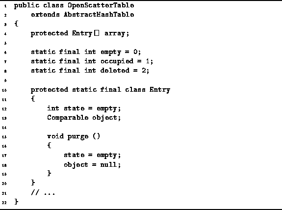

Data Structures and Algorithms
with Object-Oriented Design Patterns in Java
Data Structures and Algorithms
with Object-Oriented Design Patterns in Java
This section describes an implementation of a scatter table
using open addressing with linear probing.
Program  introduces the OpenScatterTable class.
The OpenScatterTable class extends
the AbstractHashTable class
introduced in Program .
The scatter table is implemented as an array
of elements of the static inner class Entry.
Each Entry instance has two fields--object and state.
The former is refers to a Comparable object.
The latter is an int the value of which is either
empty, occupied or deleted.
introduces the OpenScatterTable class.
The OpenScatterTable class extends
the AbstractHashTable class
introduced in Program .
The scatter table is implemented as an array
of elements of the static inner class Entry.
Each Entry instance has two fields--object and state.
The former is refers to a Comparable object.
The latter is an int the value of which is either
empty, occupied or deleted.

Program: OpenScatterTable fields and OpenScatterTable.Entry class.
Initially, all entries are empty. When an object recorded in an entry, the state of that entry is changed to occupied. The purpose of the third state, deleted, will be discussed in conjunction with the withdraw method below.
 Copyright © 1998 by Bruno R. Preiss, P.Eng. All rights reserved.
Copyright © 1998 by Bruno R. Preiss, P.Eng. All rights reserved.